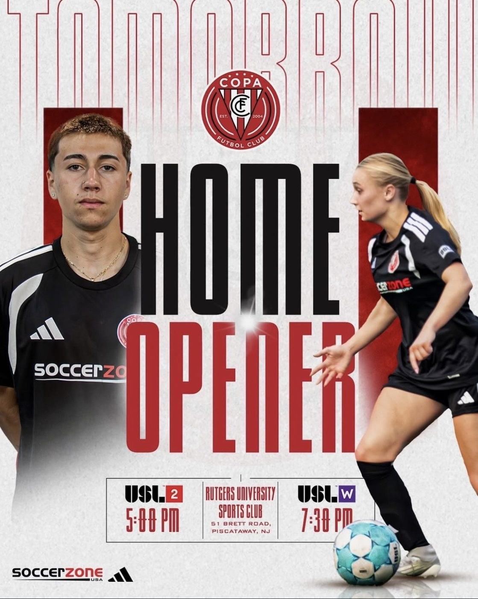
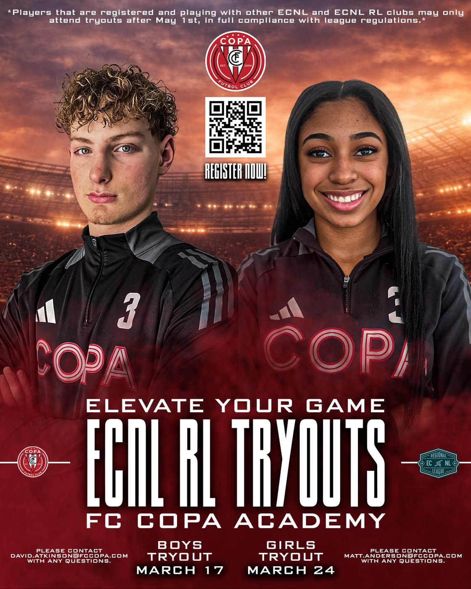
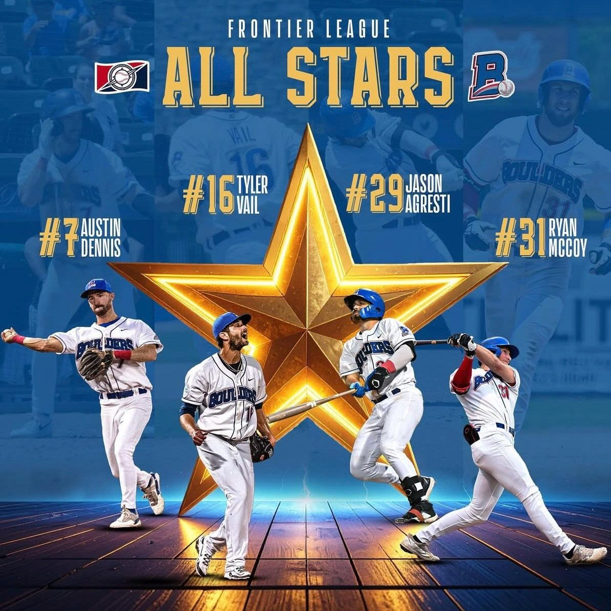
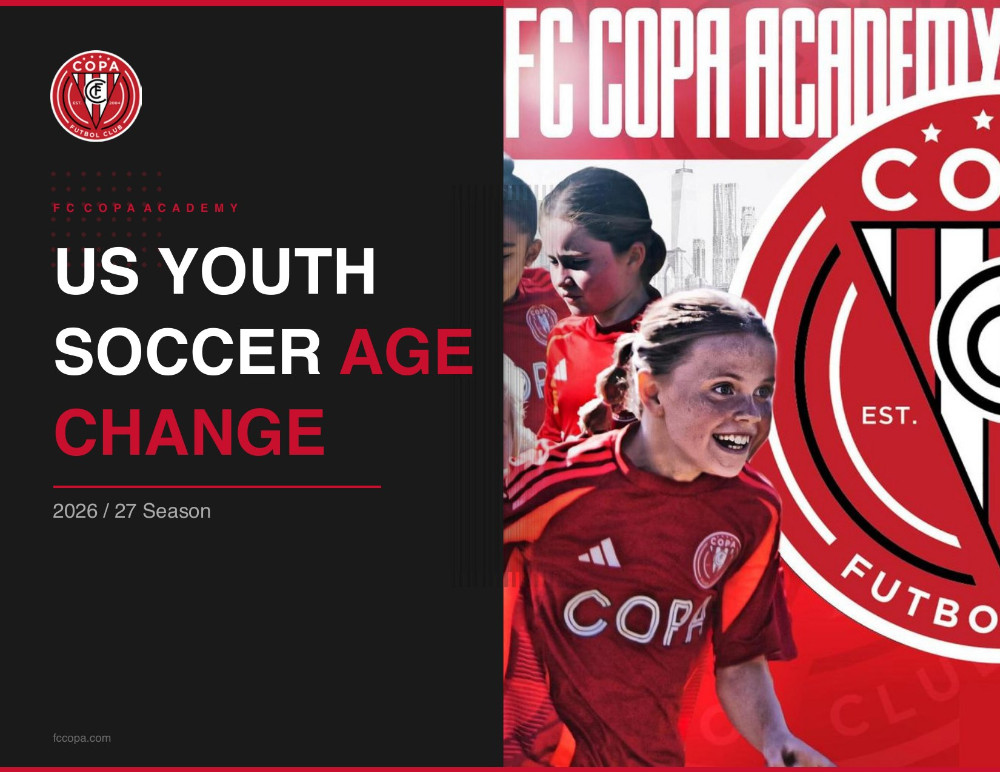
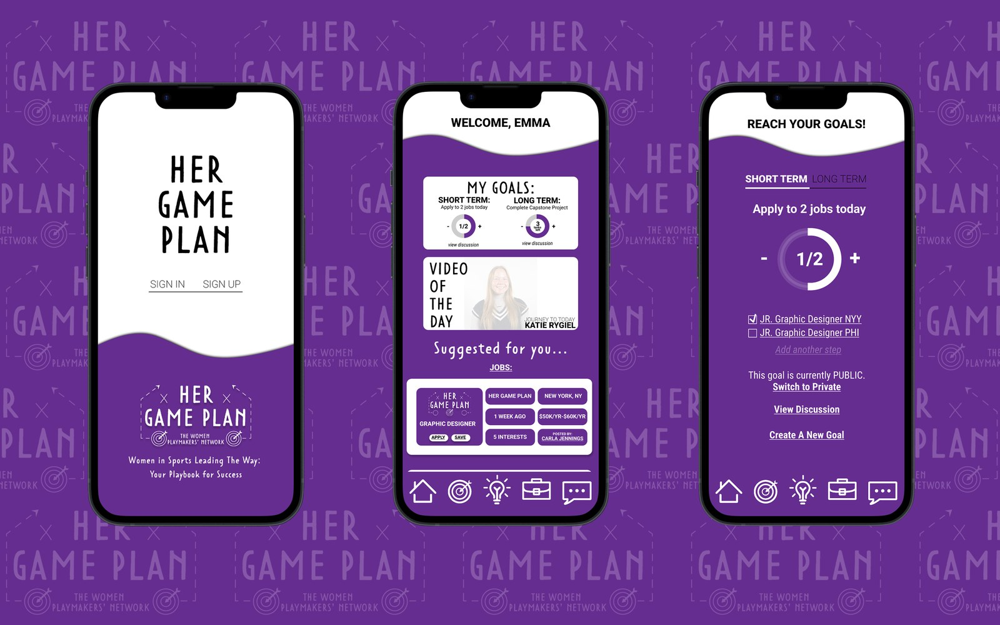
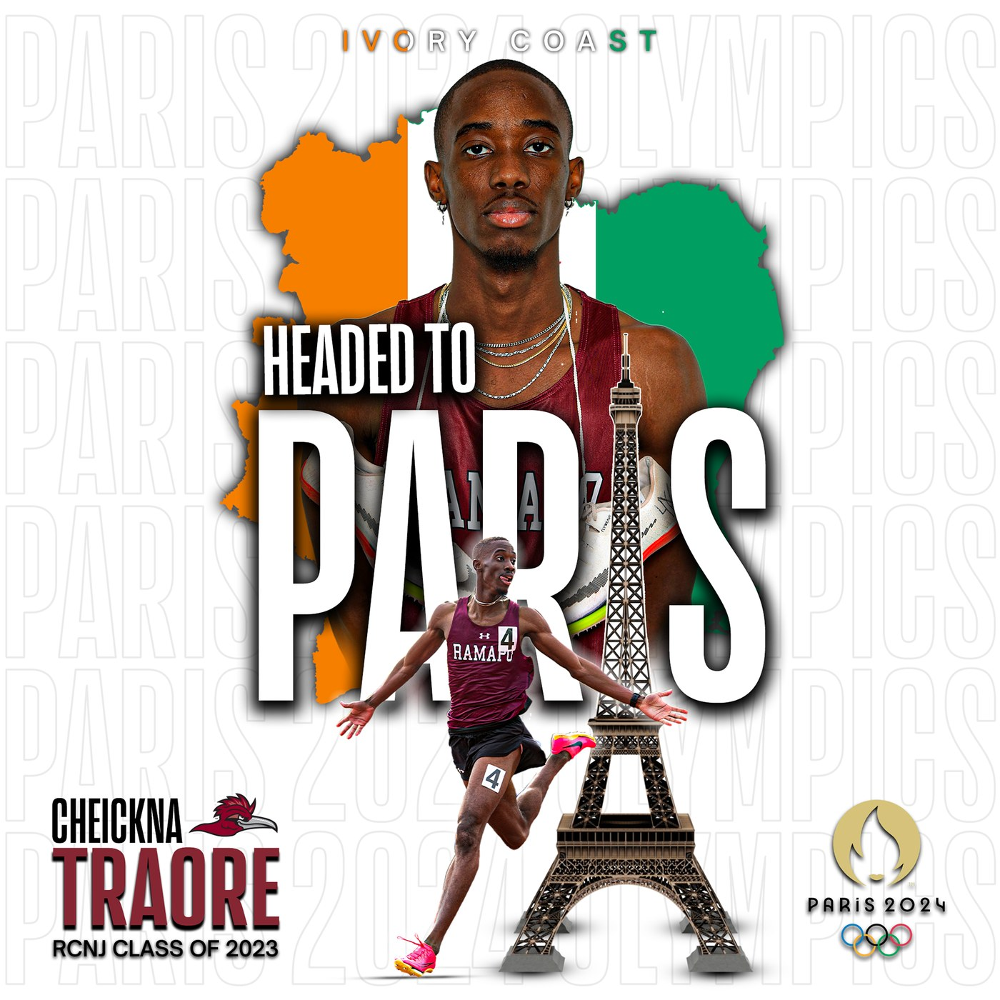
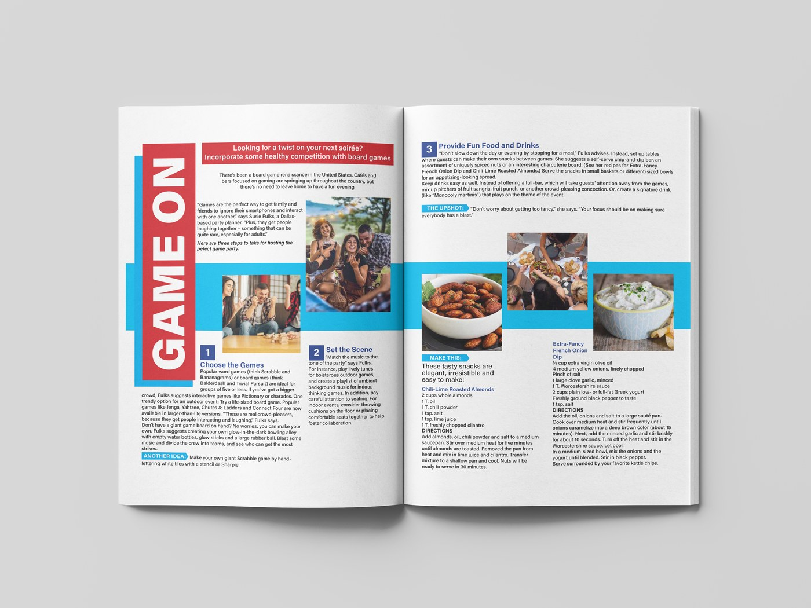

Katie Rygiel
Graphic DesignerSports Marketing & Brand Design
I develop visual campaigns and branded creative across digital, social, and print platforms. With experience in sports marketing, I combine strong visual design with strategic storytelling to create work that connects with audiences.
Selected Work
Projects
Sports marketing, social and campaign design, presentation design, and brand identity. Select a project to see the full case study.


Sports Marketing · Social & Campaign Design
FC Copa Academy & Performance Sports Center
Social graphics, tryout and recruitment campaigns, game-day promotion, and athlete recognition across two sports brands.

Professional Sports · Game Day Content & Social
New York Boulders
Game-day photography, social media graphics, and live content for a professional baseball team.

Presentation & Communication Design
Decks & Strategic Proposals
Presentation design led by the FC Copa Age Change Deck, plus a partnership proposal and a brand presentation.

Brand Identity & UX Design · Concept Project
Her Game Plan
Logo, color, typography, and merchandise for a networking platform for women in sports, extended into a Figma app prototype.

Collegiate Athletics · Graphic Design
Ramapo College Athletics
More than 300 graphics for over ten varsity programs, including game-day content, athlete honors, and a countdown series.

Editorial, Print & Illustration
Independent & Academic Design
Editorial layouts, print collateral, a book cover, a poster series, and original illustration.
Live Event Photography
About
A background in sports. A career in creative.
I’m a graphic designer and digital marketer with a background in competitive athletics and sports marketing. My work spans campaign design, social media, brand development, photography, and visual storytelling.
Currently, I create branded marketing content for FC Copa, developing creative assets that support club initiatives, athlete recognition, events, and digital communications.
Previously, I worked with the New York Boulders and Ramapo College Athletics, creating content for professional and collegiate sports.
I’m passionate about combining thoughtful design with the energy of sports and culture to create work that is both visually compelling and strategically effective.
Capabilities
- Social media design
- Campaign design
- Brand identity
- Presentation design
- Photography
- Video editing
- Digital marketing creative
Software
- Adobe Photoshop
- Adobe Illustrator
- Adobe InDesign
Also: Figma, Canva, Lightroom, Premiere Pro, Wix, Hootsuite, Buffer, and basic HTML/CSS.
Contact
Interested in working together?
I'm currently open to full-time opportunities in graphic design, digital content, creative marketing, and related roles. Based in New Jersey and open to remote, hybrid, and relocation opportunities.